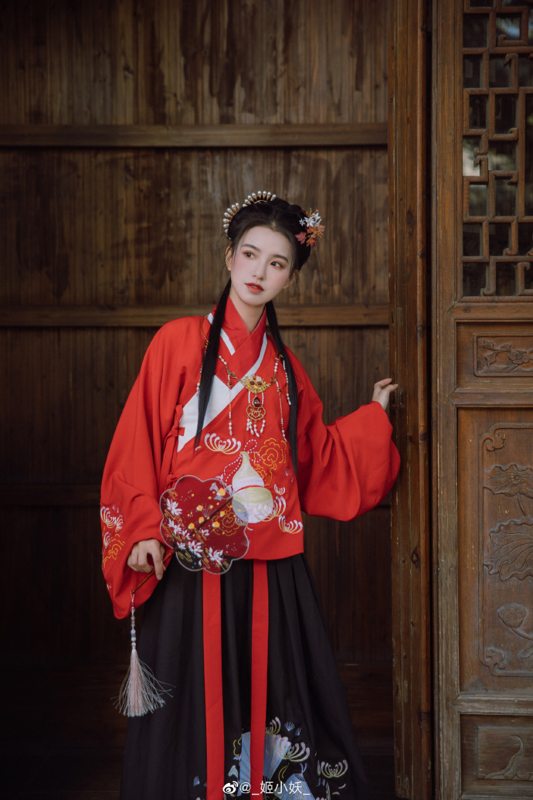

我至今记得儿时看过的星爷主演的电影《唐伯虎点秋香》，尤其是这么一个场景：星爷喊了一声“美女”，镜头内所有女人不约而同回头，其中有真正的美女秋香姐，也有长得惨不忍睹的歪瓜裂枣。可见，只要是女人就会以“美女”为准则来要求自己，孜孜不倦，自古皆是如此。“窈窕淑女，君子好逑”，最简单的理解就是，男人都喜欢漂亮女人。
雎鸠是一种水鸟，因头顶有冠羽，又名王雎。因雌鸟和雄鸟的感情十分专一，它们的叫声多被用来形容爱情。学者们普遍认为，雎鸠其实就是鱼鹰，“关关”是它们的叫声。那么，“关关雎鸠，在河之洲。窈窕淑女，君子好逑”这句耳熟能详的诗，直译过来的意思即：雎鸠在河中的沙洲上关关地叫着，美丽贤惠的姑娘，是君子的好配偶。
诗中的“君子”，含义比后世所指的要宽泛很多，纯粹指代年轻男子。君子爱美人自古就是人之常情，美丽的姑娘自然容易得到男子的青睐。西施捧心，众人皆认为美；东施效颦，众人却不愿靠近。同样是“颦”，美女和丑女的待遇却有天壤之别，可见容貌对女子来说有多重要。
人人尽说江南好，游人只合江南老。春水碧于天，画船听雨眠。
垆边人似月，皓腕凝霜雪。未老莫还乡，还乡须断肠。
七朝文物旧江山。水如天。莫凭阑。千古斜阳，无处问长安。更隔秦淮闻旧曲，秋已半，夜将阑。
争教潘鬓不生斑？敛芳颜。抹幺弦。须记琵琶，子细说因缘。待得鸾胶肠已断，重别日，是何年。
残雪凝辉冷画屏，落梅横笛已三更，更无人处月胧明。
我是人间惆怅客，知君何事泪纵横，断肠声里忆平生。
缺月挂疏桐，漏断人初静。谁见幽人独往来，缥缈孤鸿影。
惊起却回头，有恨无人省。拣尽寒枝不肯栖，寂寞沙洲冷。
又被称作《忆仙姿》、《宴桃园》、《无梦令》，其调为单调三十三字，五仄韵，一叠韵，上去通押。
亦称《长相思令》《相思令》《吴山青》。双调三十六字，前后阕格式相同，各三平韵，一叠韵，一韵到底。
四十四字，共享四个韵。前阕后二句与后阕后二句字数平仄相同。前后阕末句都可改用律句，平平仄仄平。
又名“清平乐令”“醉东风“”忆萝月”，为宋词常用词牌。此调正体双调八句四十六字，前片四仄韵，后片三平韵。
亦称《减兰》。双调四十四字，前后阕各两仄韵，两平韵，每句不同韵，换韵方式“甲乙丙丁”。
双调四十六字，前段四句三平韵，后段四句两仄韵、两平韵；双调四十四字，前后段各四句、三平韵变体。